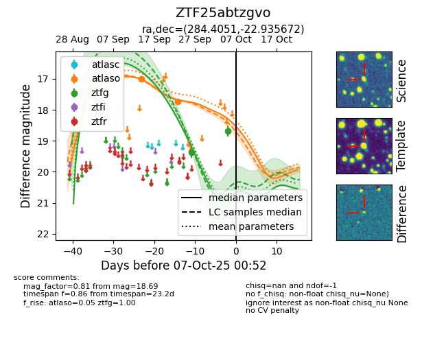
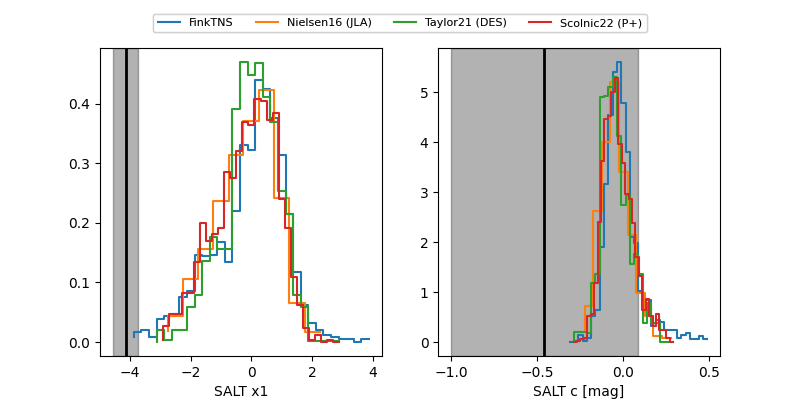

FINK: ZTF25abtzgvo
Lasair: ZTF25abtzgvo
ALeRCE: ZTF25abtzgvo
ZTF25abtzgvo (ztf,fink)
equatorial (ra, dec) = (284.4051,-22.93567)
galactic (l, b) = (12.9086,-11.52551)


last atlaso=17.74, ztfg=18.69
2 atlaso, 2 ztfg detections